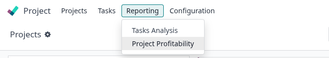
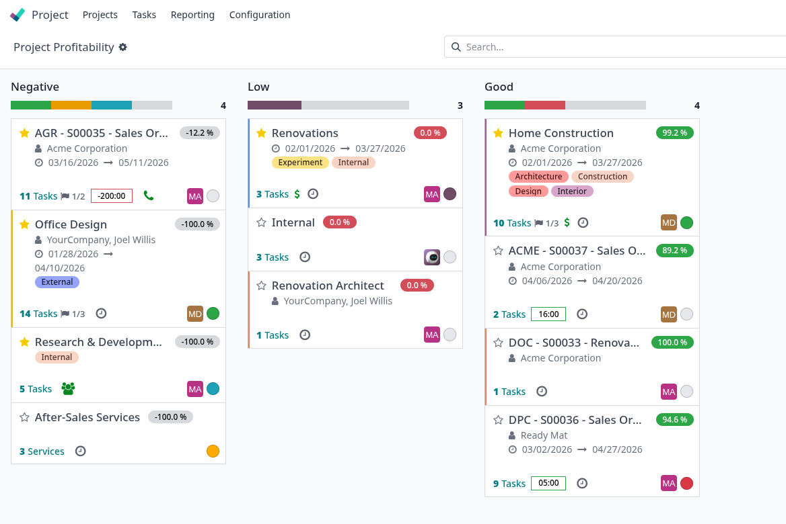

Margin (%) = (Revenue − Total Costs) / Revenue × 100
Revenue
Sum of amount_untaxed from confirmed Sale Orders (state = sale / done) linked to the project via project_id.
Total Costs
Sum of three cost sources detailed below, all linked via the project's analytic account.
Vendor Bills
Posted Vendor Bills & credit notes whose lines include the project's analytic account in analytic_distribution. Credit notes reduce the cost automatically.
Purchase Orders
Sum of price_subtotal from confirmed PO lines (state = purchase / done) with the analytic account in analytic_distribution.
Timesheet Costs
abs(∑ analytic.line.amount) for the project. Odoo stores this as a negative debit (hours × employee cost rate), so the absolute value gives the real cost.
Profitability Level — colour-coded badge
< 0 %
0 – 20 %
20 – 50 %
> 50 %
Once the module is installed, a Profitability menu entry becomes available inside the Project app. From there you can access the list of all projects with their computed margin and level without leaving the project context.

The standard Project Kanban view is extended with a colour ribbon showing the exact margin percentage on each project card. The ribbon updates automatically when timesheets are logged and can be manually refreshed for sales and purchase changes via the Recompute button.

Real-Time Margin Calculation
Sales, Purchases & Timesheets
Colour-Coded Level Badges